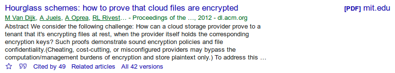

A printable PDF is available.
Research in Computer Science and Computer Security
This handout gives a broad overview of how the computer science research community operates, with specific information regarding computer security and cryptography research toward the end of the document. Many computer science students are very focused on applications of computer science and software development, and as a result have only indirect exposure to the science research that forms the core of the discipline. This handout and the corresponding class discussion are designed to open your eyes to the fascinating world of computer science research!
First a little background on terminology: scholars regularly talk about "disciplines" and "fields of study" (or just "fields"). A discipline is a high-level characterization of an area of knowledge or study, and academic departments are typically organized around disciplines. Biology, Chemistry, Physics, and Computer Science are all disciplines. While some people use field as a synonym for a discipline, it more commonly refers to a more specialized focus of study. At least in computer science, research communities generally organize around fields, with separate conferences and meetings for different fields. Theoretical computer science, programming languages, operating systems, computer security, cryptography, and networking are all fields, and there are specific conferences for each. If you look at the core curriculum of most science disciplines, you'll typically see courses organized around fields within that discipline. Notice that some fields are entirely within a single discipline, while others cross disciplines. Cryptography is mostly within computer science, but there are a substantial number of mathematicians that work in the field as well. The field of networking is pretty evenly split between the disciplines of computer science and electrical engineering. Beyond disciplines and fields, people sometimes refer to more specialized "sub-fields" -- for example, computational geometry is a sub-field of theoretical computer science, which is a field of computer science. While computer science conferences are generally organized around fields, smaller meetings and workshops are often organized around sub-fields so that more focused discussions and work can take place.
What is Research in Computer Science?
The word research is used to mean different things in different contexts, which can be confusing at first. Students at the high school and college level are often assigned "research papers," which involve finding sources of information and pulling that together in a coherent paper that summarizes this information. People refer to this as "researching a topic," but that is very different from what a scientist means by "doing research." When a scientist does research, they are looking to ask and answer questions that haven't been answered before. You won't find answers in the library or books or online since the questions haven't been answered yet: you have to figure out the answers yourself!
There are three main kinds of questions that people seek to answer in research: well-known questions that no one has been able to answer (called "open problems"); questions no one has thought to ask before because they represent a new and creative way of looking at a topic; and questions that take a logical step in gaining knowledge, but which no one has gotten around to answering yet. The vast majority of research if of this last type, and this research helps complete our knowledge in important ways. Developing algorithms that are incremental improvements of existing "best algorithms" falls in this category, as does testing algorithms in new contexts.
The first type of question, well-known "open problems," are problems that have been asked and examined by many people, but don't have answers yet. For example, "Does there exist a polynomial time algorithm for factoring large integers?" Or "What is the fastest algorithm for multiplying n×n matrices?" Or the big one: "Is P equal to NP?" The fact that these questions have been asked many times without being solved, is evidence that they are extremely difficult to solve. Some, such as the P vs NP question, have received a lot of attention from the very best minds in the computer science world, so solving them would require a significant breakthrough in thinking.
The second type of question, questions no one has thought to ask before, range from interesting new outlooks on existing problems, to breakthrough creativity that can start entire new sub-fields. For example, in 1985 Sleator and Tarjan explored the utility of analyzing algorithms on streaming data using a new measure they invented, which was later named the "competitive ratio." This observation led to so many interesting new insights that it spawned an entire sub-field: competitive analysis of online algorithms.
Styles of Research: Basic versus Applied
Scientists often talk about basic research versus applied research, depending on the kinds of questions that are asked, and what is valued as a result. Most research contains some components of both basic and applied research, so it's not an "either/or" characterization.
- Basic Research.
- Basic research focuses on fundamental questions of understanding and knowledge, and whether the results can be applied is not important. It's not that basic research research results can't have applications, but rather that is not the driving force. For example, a physicist might study string theory -- not because it has potential applications, but because it helps us understand how the universe works. In computer science, one of the most important (if not the most important) unsolved research question is the question of whether or not P=NP. A constructive proof that P=NP would almost certainly have earth-shattering practical applications, but pursuing the question on its own is a fundamental basic research question. One other characteristic of basic research is that it tends to be very general-purpose, since it explores more fundamental questions, and is not tightly tied to any particular context or application. Like any style of research, basic research aims to be useful. It's just that "useful" here means in terms of insight and use for other research within the field, not necessarily in producing new products or technologies.
- Applied Research.
- The goal of applied research is finding discoveries that could lead to new technologies or products. For example, research into speech recognition algorithms has clear applications that go beyond intellectual curiosity. Sometimes applied research is very tightly focused, such as evaluation of machine learning algorithms for detecting patients at risk for diabetes. Such application-focused research may not be useful outside of that particular setting, but that does not detract from the usefulness within that setting. Note that "applied research" refers to the focus of the research, not a particular end-product. In particular, the research does not need to lead to a new product in order to be applied research. Investigating speech recognition algorithms is applied research whether it leads to production-quality software or not. People who do applied research often use the term technology transfer to talk about applied research that is then turned into a new product or technology, and issues of intellectual property and patents come into the picture when looking at technology transfer.
Science Research - Publication and Peer Review
The end-goal of research is to learn or discover something new, and to share that so it can make an impact. In general science research, the sharing is open and public, with the goal of advancing knowledge. Industry research (or "research and development": R&D) can be different. While some companies have prominent research groups that publish their work openly (e.g., Microsoft Research, IBM Research, ...), many have R&D groups that work to make discoveries that are used in products and services, or help the company operate better. Like all research, industry projects try to answer questions, but the questions can be quite different from science research. For example, an internal industry research project might ask how different technologies meet the company's needs, or what risks they might pose to the company's operations and assets. In the Spring 2018 CSC 580 class, the "collaborative project" option reflects this kind of industry research project.
For general science research, where the goal is to advance knowledge in the field, results should be shared as widely as possible, and this is the role that conferences, journals, and books play in any research community. Computer science is a somewhat unique discipline in its emphasis on conference publication, so be aware that scholars in other disciplines often find this very strange. In some disciplines, conferences are for short abstracts (2-4 pages) where the goal is simply to stimulate discussion, and full research products are saved for publication in scholarly journals. By contrast, computer science conferences typically publish full, completed research products.
Integral to the notion of scientific publication, is the process of peer review. When a scientist submits a manuscript for publication, the people in charge of the publication (conference or journal) identify experts in the topic that is being investigated, and send the manuscript to those experts (called "reviewers" or "referees") who read and evaluate the work. The reviewers specifically consider questions such as: "Does this work make a substantial contribution to the field?" "Is the work high quality (mathematically correct and/or with a solid experimental design)?" "Is the writing clear and understandable?" The level a work must rise to in order to be a "substantial contribution to the field" depends on the venue it is submitted to. Top-tier publications expect work to be ground-breaking, but there are many publications that have less stringent requirements. However, even less selective publications expect some contribution that advances the state of knowledge in the field.
Conferences in Computer Science
In computer science, conference papers at top conferences are usually complete research products, typically 12-15 pages long, and are carefully and thoroughly refereed with only the very best research papers being accepted to the conference. Computer science conferences can be extremely competitive. For example, the 2017 IEEE Symposium on Security and Privacy had 457 papers submitted, from which 60 (about 13%) were accepted for the conference. Presenting work at such a top-tier conference is often a significant career-making move for a beginning researcher, as the papers are typically seen as the best research in the world, and it is presented before an audience that has the top researchers in the world present.
Of course, presenting a full research paper at a top research conference isn't the only way to disseminate your research. Many conferences, including some of the top-tier ones, allow people to submit less stringently reviewed work to be presented at poster session (basically a reception at the conference where attendees circulate through a room looking at posters describing work and talking with researchers). Poster sessions are particularly good for students just starting out in research, because it is a way to get your work out and seen, and to meet and talk with other researchers. At top conferences, you might even find yourself chatting with a Turing Award winner about your research, which is a pretty amazing experience! Some conferences also have "short paper" or "work in progress" tracks, which are in between posters and full papers as far as depth and prestige. A researcher with a solid but not ground-breaking research result will often have to decide whether to present a short paper at a top conference or a full paper at a less selective conference. These can be tough decisions!
Beyond the top-tier conferences, there are a lot of other
conferences. Some conferences focus on a specific sub-field (e.g., the
Conference on Public Key Cryptography (PKC)), some are simply less
competitive general conferences that encourage larger participation
(e.g., the Conference on Cryptology and Network Security (CANS), with
an a 2016 acceptance rate of 26%), and some focus on regional research
communities (e.g., the European Symposium on Research in Computer
Security (ESORICS)). While not "top-tier," some of these conferences are
very high quality. The web site
http://www.conferenceranks.com
reports on conference quality ratings for established conferences
using several sources of data. For example, the IEEE Symposium
on Security and Privacy has a Qualis rank of "A1" (the top
rating) while ESORICS and PKC have "A2" ratings (still
excellent, but not top-tier), and CANS has a "B" rating
(still good!). If you want your work to make an impact, it is best to
avoid conferences with a "C" rating. Conferences that are unlisted
are either too new to have established a track record (common for
emerging fields!) or are not taken seriously as research conferences.
As a final warning, there are science conferences (in computer science and other fields) that serious researchers will refer to as "scam conferences," "fake conferences," or sometimes "predatory conferences." As the scientific community has gotten more competitive professionally, with a strong "publish or perish" culture at research universities, people have set up conferences that will accept almost any paper submitted so that researchers can add a publication to their record. The organizers set these up to make money off registration fees, and the presenters often don't even show up to present their work. What do I mean when I say they will "accept almost any paper submitted?" In 2005, three MIT students put this to the test by writing a program that generated a random paper -- it was complete gibberish, but was mostly-correct English that used popular buzz-words, and the paper was accepted to the World Multiconference on Systems, Cybernetics, and Informatics. This is clearly not the kind of conference that a serious researcher would want to be associated with, but unfortunately it is not the only instance of this happening. Some fake conference/journal publishers are aggressive in reaching out to researchers asking them to submit papers, sometimes fraudulently listing prominent researchers (without their permission) as being associated with the conference. Established researchers can often recognize these without too much difficulty, but beginning researchers should always check conference rankings or check with a trusted colleague before taking such a solicitation at face value.
Structure of a Research Paper
Over the years, a more-or-less standard structure has evolved for computer science research papers, with all papers addressing certain specific points.
- Abstract. Papers always have an "abstract," a short 1-2 paragraph summary that gives a concise summary of the results of the paper (what was found, and why it is important). When a researcher is trying to find papers that might be interesting in a recent conference, he or she might go through and read all the abstracts to see which ones they want to look into further.
- Introduction. The paper itself always starts with an "Introduction" section that informally describes the problem addressed, why it is important, and summarizes the results of the paper. Introductions are typically 1-2 pages, so go into more depth than is possible in an abstract.
- Prior Work. The significance of a research result depends on how the work extends or improves upon what is currently known. Therefore, an important part of the paper is a "Prior Work" section that summarizes the current state of knowledge related to the topic, typically drawing explicit comparisons to how the new work is different from or better than previous work.
- Formal Definitions, Techniques, and Results. This is the main technical part of the paper, where problems are defined formally, along with appropriate notation as needed. An important goal for any research work is that the results should be verifiable and reproducible, so enough detail must be provided so that other researchers could recreate the research and validate the results. For experimental work in computer science, this means that all parts of the experimental set-up must be clearly described, including type(s) of computers/CPUs, operating system, amount of memory available, versions of compilers, etc. For work that includes data analysis, data should be maintained by the researcher in case questions arise about the research -- while making data publicly available is encouraged, in some cases either privacy or intellectual property issues prevent publishing the data, but it should be retained by the author regardless. Results of the paper should be clearly stated, as appropriate for the work (proofs for theoretical work, tables and graphs showing experimental results, etc.).
- Discussion. The discussion section puts the results into context, and describes why the researcher feels the results are significant. For experimental work, it is important to "make sense" out of any data that has been presented, explaining any anomalies or curiosities that arose in the experiments and explaining the significance in context of other known work.
- Conclusion and Future Work/Open Questions. The conclusion is a high level recap of the results, which is often similar to the brief summary provided in the abstract. It is rare that any research paper would be the absolute final word on the topic being investigated, and researchers often will describe what they believe are promising directions for improving or extending the work. Sometimes these are indications of what the authors are working on next, and sometimes these are suggestions to other researchers that might want to see if they can extend the work.
- References. Full citations to relevant related work are provided, particularly to work described in the Prior Work section. As everyone who had to write papers in high school knows, citations follow very specific content and formatting requirements. There is no "standard format" in computer science, and each publisher has their own required format. For authors who use LaTeX to write their papers (common in computer science), the BibTeX tool provides an easy way to keep track of references and automatically format them according to different standards.
Accessing Publications - Copyrights, Open Access, etc.
Accessing published research has changed dramatically in the past few decades. Thirty years ago, papers were distributed in printed form, which were purchased primarily by libraries. Printing and distributing research publications was expensive, so academic publishers protected their business interests by having authors sign over copyright to their work as a condition of getting their work published, and anyone that wanted a copy would need to pay the publisher for a copy.
While there were ways to electronically distribute research papers in the 1980's, they were not widely used. However, when the world wide web was invented in the early 1990's, this changed everything. Researchers, particularly in computer science, almost immediately set up personal web pages that could be easily located and used to distribute their work. Peer review was still important, but researchers could distribute copies from their own web sites. Publishers adapted by changing copyright agreements so that authors now typically retain the right to distribute their own work from their web pages. Not all authors distribute their work like this, however, so libraries still subscribe to journals and conference proceedings -- although those subscriptions are now for digital publications, such as the ACM Digital Library or the IEEE Xplore Digital Library. For example, the UNCG library subscribes to the ACM Digital Library, and UNCG students and faculty can access any of those publications from a UNCG IP address, or by logging in to the library web site and going through their proxy.
Another big change in research publishing started in the early 2000s, with the move toward "open access publishing." In this publishing model, publishers provide copies of research papers freely from their web site, without requiring a subscription. Since publishers can't rely on subscription fees in an open access model, costs are shifted to the authors, who pay a fee to have their work published (typically $500 to $1000). Even though publishers don't serve as an exclusive gateway to research in this model, they still manage the peer review process that is vital for ensuring quality.
There are also open publication collections that authors can submit
work to, such as the Cornell arXiv e-Print repository
(https://arxiv.org - currently
hosting over a million papers in physics, mathematics, and computer
science) and the IACR Cryptology ePrint archive
(https://eprint.iacr.org -
with over 10,000 papers in cryptology). Note that the work in these
archives is not peer reviewed, so the quality varies widely. These are
often good places to find early versions of work, or slightly expanded
work of papers that had been published in a peer-reviewed conference.
How to Find Relevant Work
There are a few tricks to finding relevant work when it comes to doing research on a particular topic. A researcher often becomes interested in a research problem based on reading a published paper (or several related papers) and being interested in adding to what is known about that topic. Describing how the paper fits into the current state of knowledge at the time it was published was the author's job, and if they provided a good "Prior Work" section then getting a full understanding of how the work fits in involves reading that section and following up with locating and reading the most relevant papers cited in that section.
As you start out investigating a topic, it is also important to find
what relevant work was done after the paper was published, and
the best tool for that task is Google Scholar
(http://scholar.google.com).
Just like the regular Google search engine allows a user to search
through web pages, Google Scholar provides a way to search through
published research papers, and does a great job of indexing the
"References" section of those papers. The following screenshot shows
what the search result for a paper that was published in the
ACM Conference on Computer and Communication Security related to
cloud storage:

At the bottom there is a link that says "Cited by 49," meaning that there are 49 papers written after this paper that cited it -- perhaps as part of the "Prior Work" section of the newer paper! Clicking on that link will bring up the list of all 49 of these papers, and you can explore to see what others have done to extend or improve upon this paper. The first step is to read through the abstracts of those 49 papers to see which ones are really relevant to your work. If you started this search with a specific idea you wanted to pursue for your own research, this is a vital step in making sure that someone else hasn't beat you to it!
Also note the link at the top right of the Google Scholar search
results, labeled "[PDF] mit.edu". This is a link to the copy
that the author is distributing freely from their home page.
While the "official" version of this paper is in the ACM Digital
Library, which you need a subscription to access, Google Scholar is a
good way to find other copies of the paper that can be accessed.
Research in Computer Security and Cryptography
Research in computer security is published almost exclusively in conferences. While there are some journals (most notably the ACM Transactions on Information and System Security and the IEEE Transactions on Dependable and Secure Computing), most research appears only in conferences. While there are dozens of solid security conferences, the following four are the top ones:
- ACM SIGSAC Conference on Computer and
Communication Security (CCS)
Held every Fall, this is the major international security conference sponsored by ACM. Most work published at CCS has both basic and applied research components, and usually has broader appeal than a sub-field. For example, cryptography research may appear at CCS, but typically only if it has a strong applied component. More esoteric research in cryptography, which might be of interest just to other cryptographers, would not usually be presented at CCS (it would more likely be at CRYPTO). - IEEE Symposium on Security and Privacy
(S&P)
Held every Spring, with a very similar focus and feel to CCS. In some ways this is the IEEE version of ACM's CCS, although the acceptance ratio of S&P is typically a little lower (and hence the prestige is marginally higher). For decades, this conference was held at the Claremont Hotel in Oakland, and so you'll often hear security researchers refer to this as the "Oakland conference" even though it hasn't been held in Oakland since 2011. - USENIX Security
Symposium
This is the top highly-applied security research conference, held every August. The majority of papers presented at USENIX report on software that has been created, which is also released. While the goal of most science research is to have people think "that's an interesting insight," the standard for USENIX is often "that does something cool." The research standard is still high: this is not the place to just report on some new piece of software, unless that software does something in a substantially new or unexpected way. - CRYPTO: International Cryptology
Conference
Held at the University of California at Santa Barbara every August since 1981, this is the top conference focused entirely on cryptography, featuring both basic and applied research. Papers range from applied to esoteric and highly mathematical.